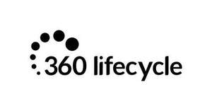
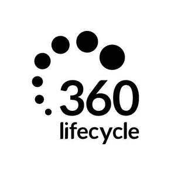
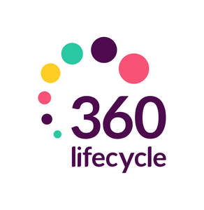
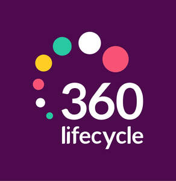

Trade Mark Journal No.2025/039 26 September 2025
UK00004251585 19 August 2025 (9,16,35,36,38,41,42,45)
Mark 1

Mark 2
Mark 3
Mark 4

Mark 5

Mark 6

- Class 9
- Computer software; computer hardware; digital recording media; data encryption apparatus; data processing equipment; computers; mobile apps; downloadable computer security software; databases; downloadable publications; electronic publications; recorded content; media content; recorded media; podcasts; safety, security, protection and signalling devices; parts and fittings for all the aforesaid goods.
- Class 16
- Printed publications; manuals; printed matter; printed reports.
- Class 35
- Customer relationship management; business and commercial information; business planning; business management; business assistance; business risk assessment; business risk management services; business introductory services; business advisory services; business consultancy and management services; commercial management; accountancy, bookkeeping and auditing; advertising and marketing; search engine marketing services; providing marketing information via websites; database and data management; search engine optimisation services; web site traffic optimisation; computerised data verification; data processing; information, consultancy and advisory services relating to all the aforesaid services.
- Class 36
- Financial affairs; financial services; financial planning; financial management; financial portfolio management; financial risk management services; wealth management; asset management; monetary affairs; mortgages; life assurance; tax and duty payment services; financial advisory services; financial information; information, consultancy and advisory services relating to all the aforesaid services.
- Class 38
- Messaging services; access to content, websites and portals; leasing access time to a database; chatroom services; telecommunications services; communication by online blogs; providing online forums; electronic communication including by means of chatrooms, chat lines and Internet forums; information, consultancy and advisory services relating to all the aforesaid services.
- Class 41
- Education, training; seminars; publishing; arranging and conducting workshops, conferences, seminars and webinars; arranging and hosting educational, training, coaching, sports, cultural and entertainment events; video, audio, audio-visual, film, podcast and documentary production; information, consultancy and advisory services relating to all the aforesaid services.
- Class 42
- IT security, protection and restoration services; design consultancy; design services; computer consultancy services; computer advisory services; design of computer databases; computer and computer software design services; computer software installation; providing temporary use of non-downloadable and web-based software; creating, maintaining and hosting the web sites of others; hosting of web portals; website design services; electronic storage of digital media; hosting of digital content; providing search engines for obtaining data via communications networks; SAAS Software as a service; PAAS platform as a service; BAAS blockchain as a service; IAAS infrastructure as a service; information, consultancy and advisory services relating to all the aforesaid services.
- Class 45
- Licensing services; licensing of computer software and computer databases; legal services; safety evaluation; reviewing standards and practices to assure compliance with laws and regulations; consultancy, information and advisory services relating to all the aforesaid services.
360 Dot Net Limited
Representative: Bison River Limited